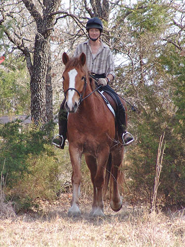

Thistle - Schooling
at the kennels Chrissie rode Thistle around at the kennels
this weekend. I took him and Adiron out
for
some play time. We're very pleased with
how
Thistle deals with everything. He's very
curious
and bold.
click
here for pics of Adiron out schooling
I'm not sure if Thistle told Chrissie
he didn't need his flash today. Personally I think he did, but it never
was a big issue.
He likes to go find out what new things
are out on the trail.
A lot of the ride Chrissie wasn't
as focused on Thistle as how the trails could be even better.
He's got silky feathers. I like them,
but I bet they get clipped for hunting.
He needs to learn to balance himself
downhill and not get on the forehand. Chrissie lets him make the mistake,
but them reminds him.
Standing and watching Adiron work.
Not Thistle's favorite thing, but he's learning to be patient.

He's always curious about finding
a photographer out in the woods.
Chrissie and Thistle sharing a joke.
He's a little slow, he'll get it in a second....
Not DH taking the pictures. But even
though the timing is off, it's nice to see him forward and straight before
the jump.
There's a lot of power there. He likes
to canter away and takes the opportunity to be forward on the landing side.
Not crazy forward, but 'let's have fun' forward.
Over the bigger jump he always took
the offer to jump and not just trot it.
A lot of change from a year ago. He's
still not finished growing, but the pieces are coming together.
He'll pester his handler just a bit
for attention.